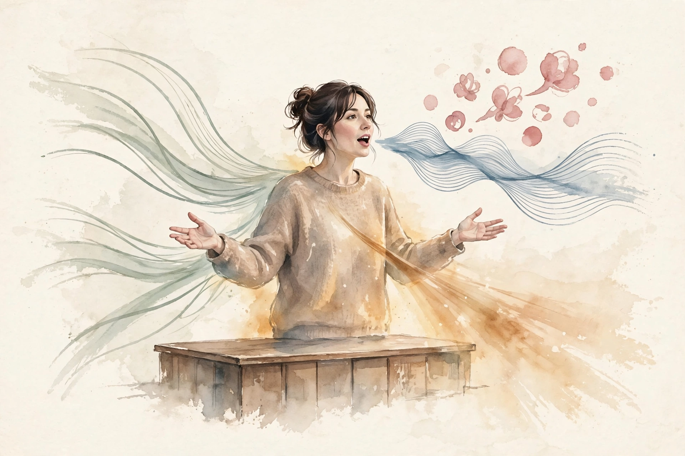
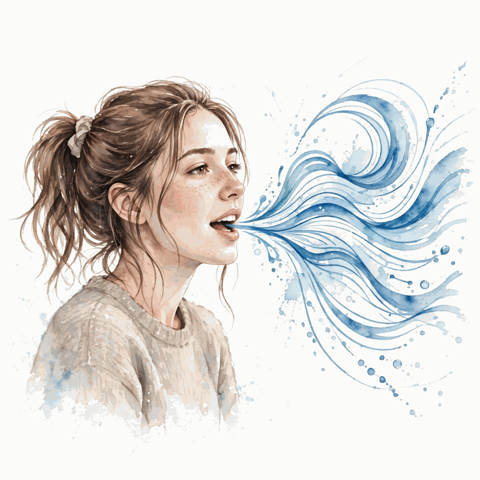
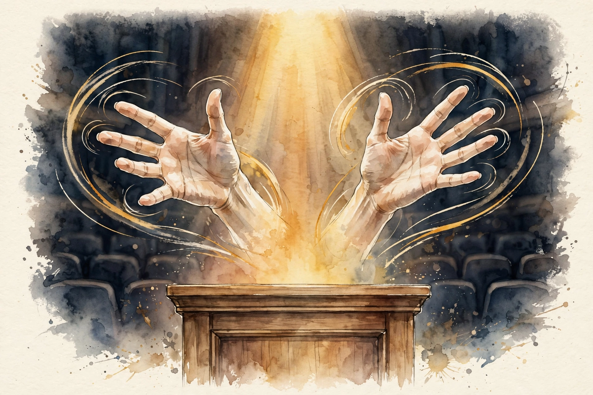

Charisma · Episode 1 · Companion
Cues: How Body Language Decides Before You Speak
Vanessa Van Edwards runs a human behavior research lab. In this Diary of a CEO conversation she argues that people decide whether they like, trust, and want to listen to you before you finish your first sentence. The decision runs on cues. Charisma is not a gift. It is a recipe. This companion follows the episode chapter by chapter.
Watch. The official Diary of a CEO episode video. Chapter times below follow the show's published chapter list.
Source fact A claim from the episode transcript or the show's published chapter list. Interpretation My read on what it means. Times marked ~ are proportional estimates from word position, since the transcript carries no timestamps.

The Hidden Language
Source fact She opens with a test. Say five while holding up three fingers. It is hard. The words and the hands fight each other. That fight is the thesis: gestures resist lies in a way words do not.
Your brain is 12.5 times more likely to believe my gesture over my words.
Vanessa Van Edwards · Episode 00:00
Source fact She describes herself as a recovering awkward person. She thought charisma was genetic and that she lacked it. Then she discovered that highly successful people speak a hidden language: cues. The episode states the number plainly. The lab catalogs 97 of them.
Interpretation The opening does two jobs. It proves the claim in your own body with the five-versus-three test, and it lowers the barrier: the teacher starts as the awkward student.
Four Channels


Source fact Everything you broadcast travels on four channels at once. Body cues: posture, gestures, facial expression, eye contact, touch. Vocal cues: pitch, pace, volume, inflection, pauses. Verbal cues: the words you choose and the order you put them in. Ornament cues: clothes, jewelry, hair, background, everything people see around you.
Source fact Signal amplification bias is the false belief that other people read your cues louder than they do. You think your nerves scream. They whisper. You think your confidence shines. It glows dimly.
The Recipe and the Ambivert
Source fact You do not need all 97 cues. An ambivert, someone between introvert and extrovert, picks a different recipe from a high-energy extrovert. The recipe must fit the cook.
Source fact The Jamie Siminoff story makes the business case. Siminoff pitched Ring on Shark Tank and walked away without a deal. He later sold the company to Amazon for a large sum. One room of investors reading your cues wrong can cost you the outcome, while the cues themselves stay trainable.
Your Resting Face
Source fact Most people walk around with a resting bothered face: a default expression that reads as sad, angry, or afraid. The camera version shows up in profile pictures. She names three mistakes. Fear eyes: wide eyes that signal alarm. Contempt: a one-sided smirk that reads as superiority. A fake smile: the mouth smiles and the eyes stay dead.
Toy: the resting-face audit
Open your current profile picture. Check it against the three mistakes from the episode.
Do Not Fake the Smile
Source fact Dr. Barbara Wild ran a study on smiles, cited in the episode. Genuine smiles engage the muscles around the eyes. The mouth alone is not enough.
Source fact The fix she offers is the pen trick: hold a pen between your teeth for a few seconds. The teeth grip forces the smiling muscles into the genuine position. Your face then sends the warmth cue even when you start from neutral.
The Thermostat
Source fact Susan Fiske published the finding in 2002, cited in the episode: warmth and competence explain about 82 percent of the impression you make. Warmth answers the question whether you are a friend or a foe. Competence answers whether you can act on your intentions. Every cue you send tilts one of the two dials.
This is like a thermostat. You can dial up warmth cues and dial up competence cues, and this changes the way people treat you.
Vanessa Van Edwards · Episode ~00:32
Source fact She frames the pair as a thermostat. You do not set both dials to maximum. Too much warmth with no competence reads as a pushover. Too much competence with no warmth reads as cold. The sweet spot sits just past the middle on both.
The warmth-competence map
Two dials, four rooms. Hover for what each room feels like.
Source: Diary of a CEO, Vanessa Van Edwards, 18:00. Fiske, Cuddy, and Glick 2002 for the 82 percent finding.
The Danger Zone
Source fact The episode names the off-balance regions the danger zone. High warmth and low competence makes people like you but not follow you. High competence and low warmth makes people respect you but not trust you.
Toy: set your dials
Move the sliders to a recent meeting. See which room you were in.
The Five Power Cues
Source fact Power cues turn up the competence dial.
Source fact One, the steeple: fingertips touch, palms apart, forming a church-steeple shape. It signals confidence because only a calm person holds the hands still in that shape. Two, earlobe-to-shoulder distance: drop the shoulders so the gap grows. Short gaps read as tense. Long gaps read as relaxed and in command. Three, end-of-sentence eye contact: hold eye contact for about 60 to 70 percent of a conversation, and land it at the end of your sentences. The end is where the claim lands, so the eyes should be there to back it. Four, lower lid flex: a slight tightening of the lower eyelid. It reads as focus and authority. Five, downward inflection: let the pitch fall at the end of statements.
Source fact Rising pitch at the end, called uptalk, turns statements into questions. The episode cites a surgeon voice study: patients judged surgeons as more likely to face malpractice claims from the tone of voice alone. In a two-truths-and-a-lie exercise, listeners catch the lie partly because the liar's pitch rises.
The Five Warmth Cues
Source fact Warmth cues turn up the friend dial. One, the triple nod: nod three times while someone speaks. In the cited research, people talked 67 percent longer to a triple nodder. It signals the listener to keep going, that you are with them. Two, the head tilt: a slight tilt exposes the neck, a vulnerable area, and reads as openness. Three, the authentic smile: eyes engaged, the Barbara Wild finding. The mouth alone is not enough. Four, the lean: lean in slightly when someone speaks. Distance reads as disinterest. Five, the nonverbal bridge: point a foot, a knee, or a torso toward the person you want to welcome. The body forms a bridge they can walk across.
Source fact One warning: do not bow. A bow reads as submission in most Western rooms and drops the competence dial.
The Popular Kids
Source fact The Van Sloan study, cited in the episode: the popular kids were not the funniest or the best looking. They kept the longest liked-list. They could name the most people they liked. Liking people at scale made people like them back.
Three Magic Phrases
Source fact One: I was just thinking of you. It tells the person they occupy space in your mind. Two: you are always so... followed by a genuine trait. It tells them their pattern is seen. Three: the last time you mentioned... It proves you listened and remembered.
Source fact The three phrases share one mechanism. They move the conversation down the three intimacy levels she borrows from personality research: general traits, personal concerns, and self narrative. Small talk lives at level one. Friendship needs level two and three.
Source fact Hero, healer, and victim are the three narratives people tell about themselves. The hero overcame. The healer helps. The victim was harmed. You do not argue with someone's narrative. You hear which one they tell and respond inside it.
Source fact She also describes personal-brand neural networks. Everyone you meet files you in a network of associations. Allergies are the traits that repel people from your network. Attractors are the traits that draw them in. Audit both lists on purpose. Her dating-profile example: every picture should create allergies in the wrong person and attractors in the right one.
The Luck Experiment
Source fact The Richard Wiseman luck study, cited in the episode: lucky and unlucky people read the same newspaper. The paper hid 42 images and a message in big print on the second page: "Stop counting. There are 42 images in this newspaper." Lucky people spotted the opportunities. Unlucky people missed them while hunting only for what they were told to find.
Proximity Is a Delivery System
Source fact The 58,000-hour study, cited in the episode: sit within 25 feet of a high performer and your own performance rises by about 15 percent. Sit within 25 feet of a low performer and it falls by about 30 percent. Proximity is a cue delivery system.
Who sits within 25 feet of you
The 58,000-hour study. Hover for detail.
Source: Diary of a CEO, Vanessa Van Edwards, 34:36. The 58,000-hour study, as cited on air.
Source fact The sweat study: researchers collected sweat from frightened people and had others smell it in an fMRI scanner. The fear centers of the smellers lit up. Emotion travels through channels you never notice.
Source fact The cue cycle: actors saw faces flashing rejection cues too fast to notice consciously. Their pupils dilated. Your body reads cues your mind misses, and then your body answers.
Source fact Matthew Lieberman's finding completes the defense: label the emotion to tame it. Naming what you feel, silently and precisely, lowers the brain's alarm response.
Source fact The Pygmalion loop: expectations shape behavior, which shapes outcomes, which confirm the expectations. Expect the best from people and your cues change, and their results follow.
The Gesture Gap

Source fact The TED study behind the headline: the most popular TED talks averaged 465 hand gestures per 18 minutes, while the least popular averaged 271. The difference is 194 gestures, or about 72 percent more movement in the talks people loved.
Hand gestures in TED talks, per 18 minutes
The named study behind the gesture claim. Hover for detail.
Source: Diary of a CEO, Vanessa Van Edwards, 41:26. The TED gesture study, as cited on air.
Source fact Vocal variety works the same way for the voice. She teaches three voices. The TED voice is the big-stage voice, projected and paced. The numbers voice is the precise voice for data, slower and flatter so figures land. The story voice is the warm, varied voice for narratives. Monotone speakers use one voice for all three jobs.
Source fact The penguin problem names what goes wrong. A penguin stands contracted, arms pinned, body small. Many people present as penguins: small posture, small voice, vocal fry at the ends of sentences. The fix she gives is simple: speak louder. Volume forces the body open and the fry fades.
How to Spot a Liar
Source fact Humans detect lies at about 54 percent accuracy, barely above a coin flip. The episode states the figure without naming the original study on air.
Source fact The episode lists cues that raise the odds: question inflection on statements, a sudden drop in volume, nods that do not match the words, with the warning that nodding norms differ, naming India, Bulgaria, and Pakistan as examples, and disgust or sniffing when someone describes something they claim to like.
Source fact Monica Moore's availability research, cited in the episode: people signal romantic availability with about eight glances, feet pointed toward the target like a croissant, and an open torso. The cues are countable, which is the point.
Greetings Set the Frame
Source fact Two stances, two meanings. Blading, turning the body sideways, is a protective stance and reads as guarded. Arms out, chest open, reads as welcome. For the handshake, the window is one to three seconds. Shorter reads as dismissive. Longer reads as dominance play.
Source fact Two handshake variants to know. The cupping handshake, where one hand cups over the other person's hand, is the politician's handshake. It reads as warmth plus control. The Trump flip, where the shaker yanks the other person's hand toward themselves, is a danger-zone move. It claims dominance and the room feels it.
Source fact Nod direction matters. Nodding up, chin lifted, reads as casual and friendly among peers. Nodding down reads as formal acknowledgment, the kind you give a superior. Choose on purpose.
Source fact Stage blocking, from her work with speakers: put science on the left side of the stage and stories on the right. The audience then files each part in the right drawer without being told.
The Six Questions
Source fact Three conversation upgrades run through the episode. First, replace what do you do with what are you working on that excites you. She prescribes a 30-day diet: ask the excitement question for 30 days and watch conversations change. What do you do gets a job title. The excitement question gets a story.
Source fact Second, ask the goal question. What is your goal right now invites people to share what they care about. Third, ask the character question. The Katniss example: asking someone which fictional character they relate to reveals values faster than any resume question.
The Room Itself
Source fact Lean in slightly when someone speaks, and build the nonverbal bridge: a foot, a knee, or a torso pointed toward the person you want to welcome.
Source fact The other-shoe effect, from Richard Wiseman's work as retold in the episode: a researcher knocked over coffee, and the audience rated the clumsy person as warmer and more competent. A small, human mistake drops the guard of the room. Perfection raises it. The episode retells this as Wiseman's work without naming the original study on air.
Source fact Friendship dating is her term for auditioning friends the way people audition partners. The Casa de Luz test: she visited a community space repeatedly to see whether the same people showed up, whether conversations went past small talk, and whether she felt welcomed.
Source fact The AirPods warning: constant earbuds kill weak ties, the casual acquaintances who deliver most new opportunities.
Source fact The ambivalent tie finding: a study of police officers found that ambivalent relationships, hot and cold, damaged health more than purely toxic ones. Predictable enemies are easier on the body than unpredictable friends.
Source fact The Truman story: at the 1944 Democratic convention, Truman's team air-conditioned a small room and invited power brokers inside on a hot day. Comfort did the persuading. Control the room and you control the cues.
The episode in seven lines
- Charisma is a recipe: pick the cues that fit you and drill them.
- You broadcast on four channels. The room receives a fraction of what you feel, so broadcast bigger.
- Set the thermostat: warmth and competence, both just past the middle.
- End sentences down. Land claims with eyes on the listener.
- The triple nod costs nothing and buys 67 percent more talk.
- Keep a liked-list. Popularity follows liking.
- Audit your 25 feet. Proximity is a cue delivery system.
Distilled from Diary of a CEO, Vanessa Van Edwards: The Science of Charisma, Dec 2024. Full episode: youtube.com/watch?v=VHUrdELKjDw. Times follow the show's published chapter list. Times marked ~ are proportional estimates from the transcript.